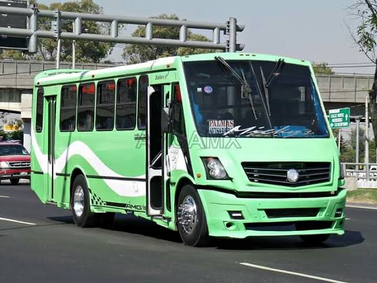
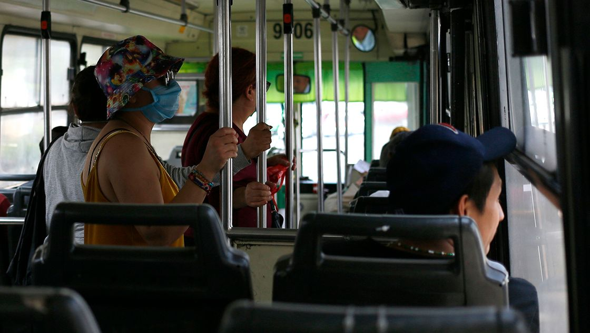

Se utilizaba para recorrer distancias largas, con un cupo muy grande, permitiendo un precio accesible.

Su uso se ha reducido drásticamente debido a la exposición que conlleva viajar en este vehículo.
